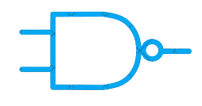

Símbolos
VoltarOr
| A | B | X |
| 0 | 0 | 0 |
| 0 | 1 | 1 |
| 1 | 0 | 1 | 1 | 1 | 1 |
A operação "OR" retorna verdadeiro se pelo menos uma das condições
for verdadeira. O resultado só será falso se todas as condições
forem falsas.
Not
| A | X |
| 1 | 0 |
| 0 | 1 |
A operação "NOT" inverte o valor lógico de uma condição. Se a
condição for verdadeira, "NOT" a tornará falsa, e vice-versa.
And
| A | B | X |
| 0 | 0 | 0 |
| 0 | 1 | 0 |
| 1 | 0 | 0 | 1 | 1 | 1 |
A operação "AND" retorna verdadeiro apenas se todas as condições
forem verdadeiras. Se pelo menos uma condição for falsa, o resultado
será falso.
Nor
| A | B | X |
| 0 | 0 | 1 |
| 0 | 1 | 0 |
| 1 | 0 | 0 | 1 | 1 | 0 |
A porta NOR (Negação do OU) produz 1 se todas as entradas forem 0.
Ela produz 0 se qualquer entrada for 1.
Buffer
| A | X |
| 0 | 0 |
| 0 | 0 |
A porta Buffer simplesmente repassa sua entrada, inalterada, para
sua saída.

Nand
| A | B | X |
| 0 | 0 | 1 |
| 0 | 1 | 1 |
| 1 | 0 | 1 | 1 | 1 | 0 |
A porta NAND (Negação do E) produz 1 se qualquer uma de suas
entradas for 0. Ela produz 0 apenas se todas as entradas forem 1.
Xnor
| A | B | X |
| 0 | 0 | 1 |
| 0 | 1 | 0 |
| 1 | 0 | 0 | 1 | 1 | 1 |
A porta XNOR (OU Exclusivo Negado) produz 1 se todas as entradas
forem iguais (todas 1 ou todas 0). Ela produz 0 se as entradas forem
diferentes. É o oposto da XOR.
Xor
| A | B | X |
| 0 | 0 | 0 |
| 0 | 1 | 1 |
| 1 | 0 | 1 | 1 | 1 | 0 |
A porta XOR (OU Exclusivo) produz 1 se suas entradas forem
diferentes. Ela produz 0 se as entradas forem iguais.